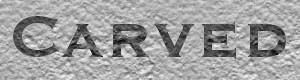
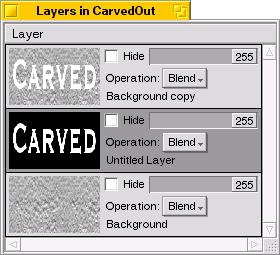
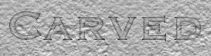
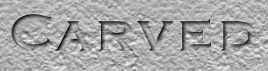

Step 1
 Pick a suitable background image. For this particular effect, a marble, wooden,
metal, or stone-like surface will look best. In the example we have simply used
the Generate > Tile add-on to fill a blank new canvas with a stucco pattern,
although you could just as well have loaded an existing image.
Pick a suitable background image. For this particular effect, a marble, wooden,
metal, or stone-like surface will look best. In the example we have simply used
the Generate > Tile add-on to fill a blank new canvas with a stucco pattern,
although you could just as well have loaded an existing image.
Step 2
 Switch to selection mode and select the area you want to give the carved out effect. You could paint using any of the tools, and in our example we have typed some text using the text tool and the Copperplate font. Note that if you don't get the centering or position right the first time, you can select Layer > Translate, which will also work on the selection map.Step 3
 Now, select Layer > Duplicate. This creates an exact copy of the current layer (which happens to be a simple tiled pattern right now) into a new layer. You will not see anything spectacular happen on screen, unless you have the Layer Window open.Now, Edit > Cut (Alt-X) the selection. You have now "punched out" the text in the top layer. You will not be able to see so, since the underlying copy will show through, matching exactly with what you just cut out. If you want, you can open the Layer Window to see what's going on.
Next, select Layer > Insert New. This new layer will be placed between the "cut out" top layer and the bottom layer. Again, there isn't much visible on screen because this middle layer is transparent. This layer will contain the shadow.
To create the shadow, first select Edit > Invert Selection to select everything but the text you have cut out. After that, select Edit > Colorize Selection > Foreground to paint that area black. Again, nothing is visible on screen, as you have carefully painted the area not visible through the cut-out. Another option of doing the same would have been to fill the entire layer with black using the fill tool, and then selecting Edit > Cut again.
If you have the Layer Window open at this time, it will look like shown.
Step 4
 The next step is to make the shadow a bit "blurry" by using the Gaussian Blur filter. First, choose Edit > Deselect All (Alt-D), otherwise the effect of the filter would be limited to the selected area – and nothing noteworthy would happen (remember that the selection, at this point, holds only, and exactly, the black area of the middle layer).
Now, invoke Edit > Filter > Gaussian Blur and adjust the parameters until
you get a satisfying blur (the effect need only be quite subtle). Remember you can
Alt-drag the preview area over a more interesting spot of your canvas.
Also, remember to swith back to drawing mode (Tab) or there will be
nothing to blur. Select Apply in the add-on once you're happy with the parameters.
Step 5
 The next step is to give the drop shadow artificial "depth". This is done simply by invoking Layer > Translate, and moving the layer a few pixels down and to the right. The effect is as shown on the left. Don't worry if the readability isn't very good, the last step will take care of that. Focus on producing a good looking shadow effect.Step 6
 Finally, as a fix-up to increase the readability (and the illusion of depth),
we want to make the "lower" area a bit darker. This is done by inserting a fourth
layer (which will be directly above the background layer), filling it with pure black,
and adjusting its global alpha value in the Layer Window. For the example, it is set
to 50. You can also experiment with darkening using a colored layer.
Finally, as a fix-up to increase the readability (and the illusion of depth),
we want to make the "lower" area a bit darker. This is done by inserting a fourth
layer (which will be directly above the background layer), filling it with pure black,
and adjusting its global alpha value in the Layer Window. For the example, it is set
to 50. You can also experiment with darkening using a colored layer.